MULTISITE_MECHANICAL_SURROGATE · actual native accepted states · displacement ×1
中文科研报告 · 最终状态 · 多块指标 · 尺寸分布 · 实际残余桥接键
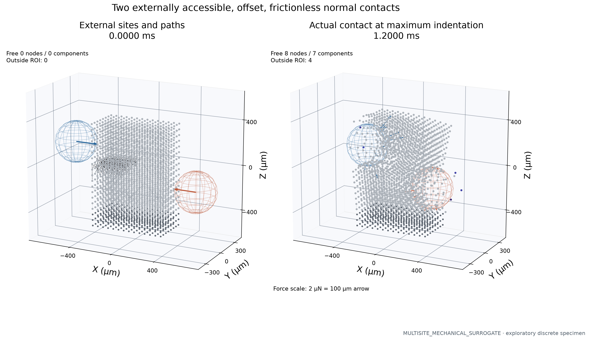
Left: original specimen, anchors, sampled original precuts and imposed path arrows. Right: actual accepted state and per-node contact forces (at most 18 arrows per source, physical scale shown). No tangential friction law; offset normal loading may produce mixed deformation. Attached points gray; free points colored by exact component ID.
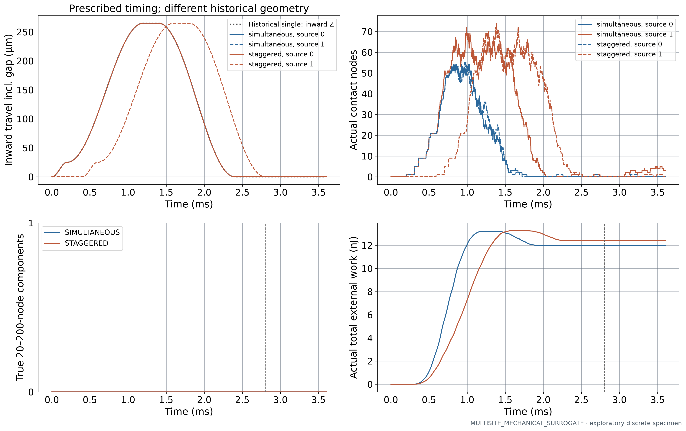
A/B share sites and trajectories; B source 1 starts 0.4 ms later. The dotted historical single-source path is context, with a different contact position/direction. Equal travel does not imply equal force or work. Dashed vertical line marks the common 2.8 ms cohort, not guaranteed last contact.
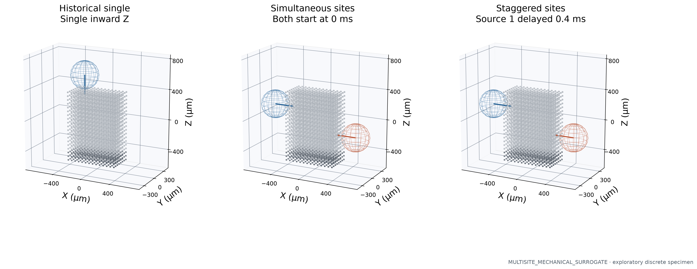
Actual historical and frozen new external sphere centers and complete inward travel arrows on the same original geometry, physical ROI and camera. A/B sites are identical. Historical geometry is read from its accepted indenter implementation; it is not a same-geometry source-number control.
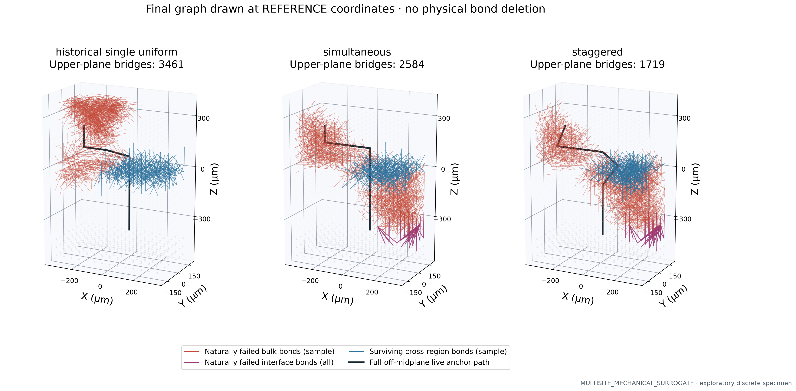
Final actual damage/topology on reference geometry for comparable bridge locations. Original bulk/interface identity is retained; all interface failures are displayed separately. The original notch is not counted as naturally failed. Displayed bulk/bridge samples only reduce clutter; all original IDs and full counts remain in the evidence. Black path stays outside |Y| ≤ 50 µm and proves surviving three-dimensional connectivity to anchors. Pinned graph cuts are diagnostics, not fracture energy.
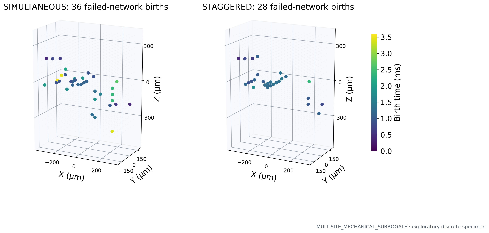
Birth centroids use actual original bonds of new fully failed bulk networks, excluding precuts. A birth is a discrete failed-edge component event, not a resolved crack surface or a free fragment. Reference geometry is explicitly used.
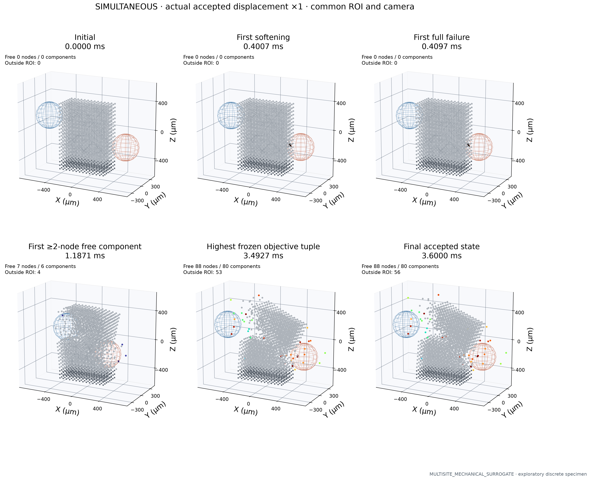
Actual accepted FP64 states, displacement ×1, gray attached body and component-ID colors for detached points. Missing events are explicitly absent. All particles inside the fixed ROI are plotted; out-of-ROI counts are shown. A ≥2-node event can be unresolved debris. All internal live bonds are shown for ≥14-node free components, with no invented shell.
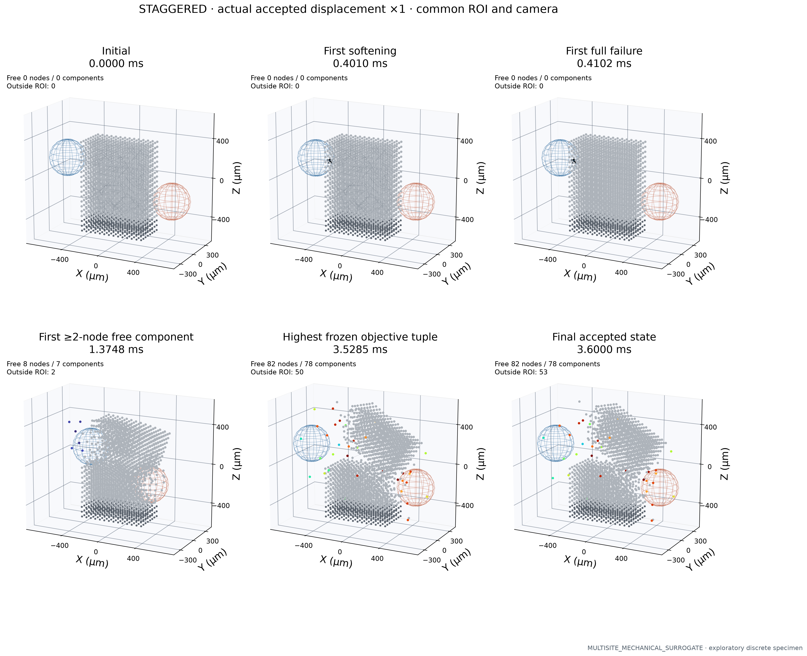
Actual accepted FP64 states, displacement ×1, gray attached body and component-ID colors for detached points. Missing events are explicitly absent. All particles inside the fixed ROI are plotted; out-of-ROI counts are shown. A ≥2-node event can be unresolved debris. All internal live bonds are shown for ≥14-node free components, with no invented shell.
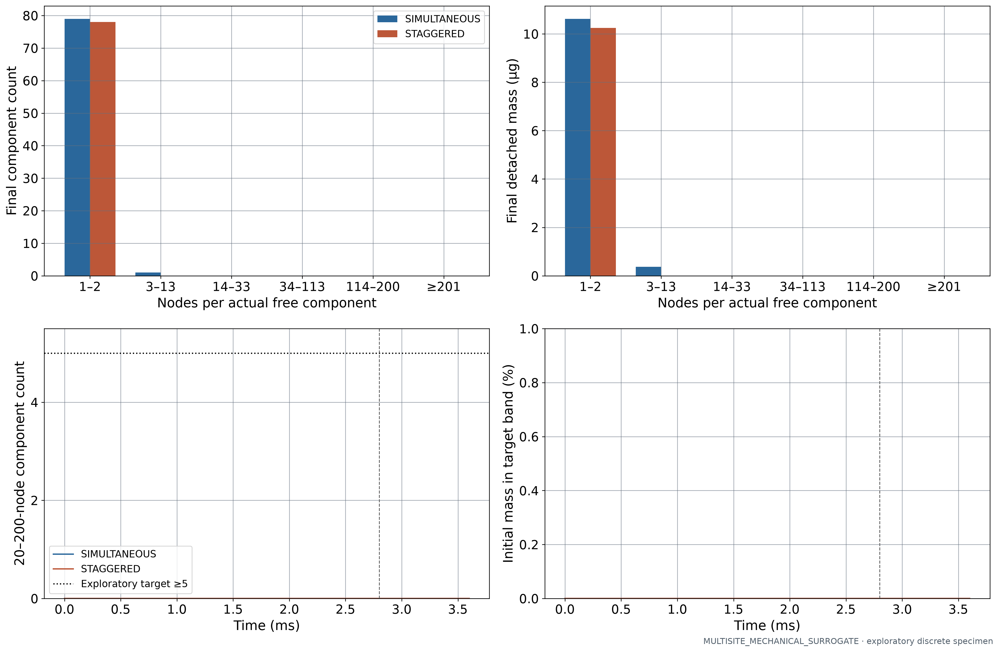
Six frozen size bins from actual free connected components. Volumes use node count × reference node volume, and equivalent diameters are in CSV/JSON. Bins are exploratory discretization categories, not medical particle classes. Zero bars are retained.
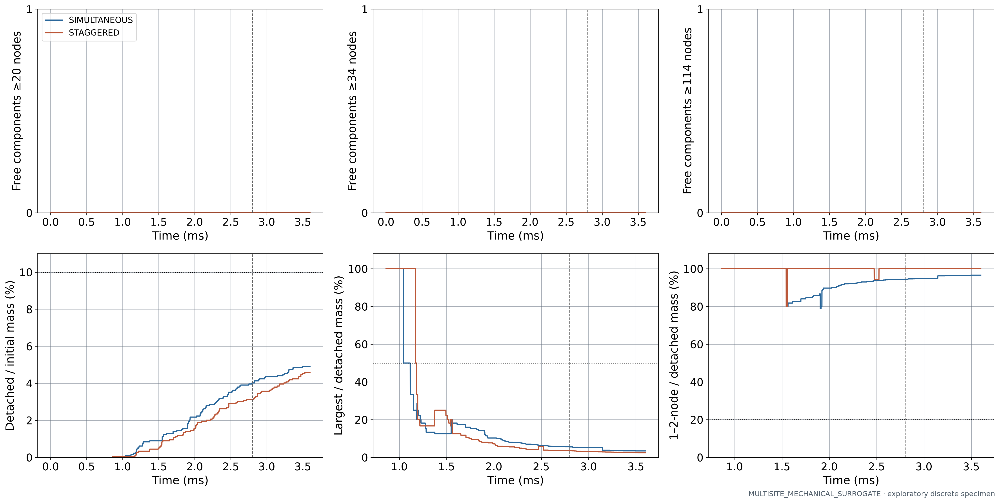
Independent size, mass, dominance and fine-debris metrics; no weighted total masks failure. Undefined fractions before detachment are gaps. Dotted thresholds are frozen exploratory constraints; common cohort time 2.8 ms is dashed.
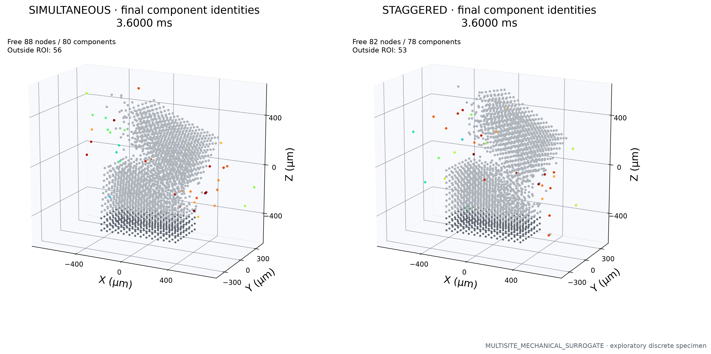
Exact member IDs define free components, colored consistently within each case across the evolution panels. Attached material remains neutral gray. Component IDs are labeled for ≥14-node groups; all component memberships are available in registry and history. Camera clipping is counted, not hidden.
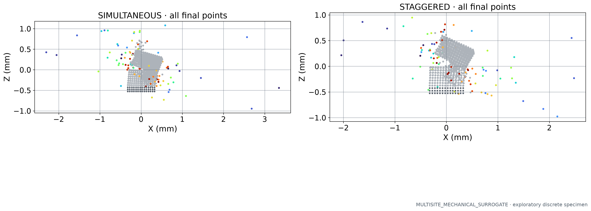
All final points, without the 3D ROI clipping, in X–Z projection. Colors use exact surviving-component identity; overlap in projection does not merge fragments.
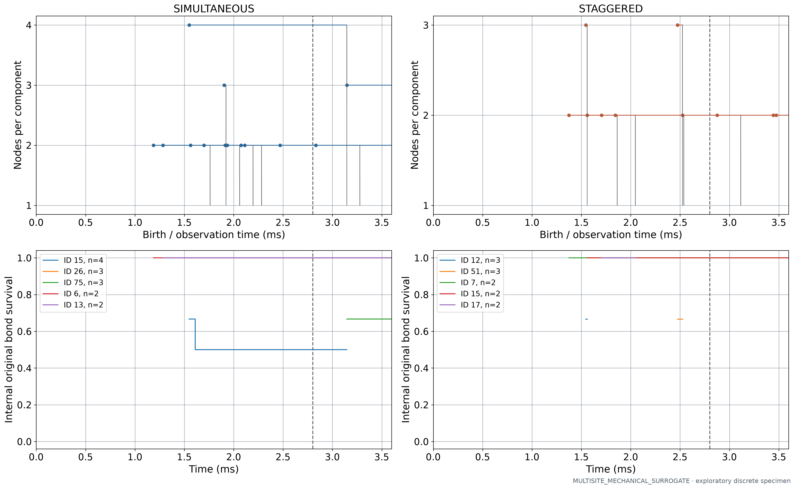
Exact original memberships define births and split ancestry. Lifelines are shown for all ≥2-node components; up to five largest have internal-cohesion traces. A two-node pair remains unresolved debris, even with 100% survival. Lifetimes are right-censored by the actual final time; the common 2.8 ms cohort is dashed.
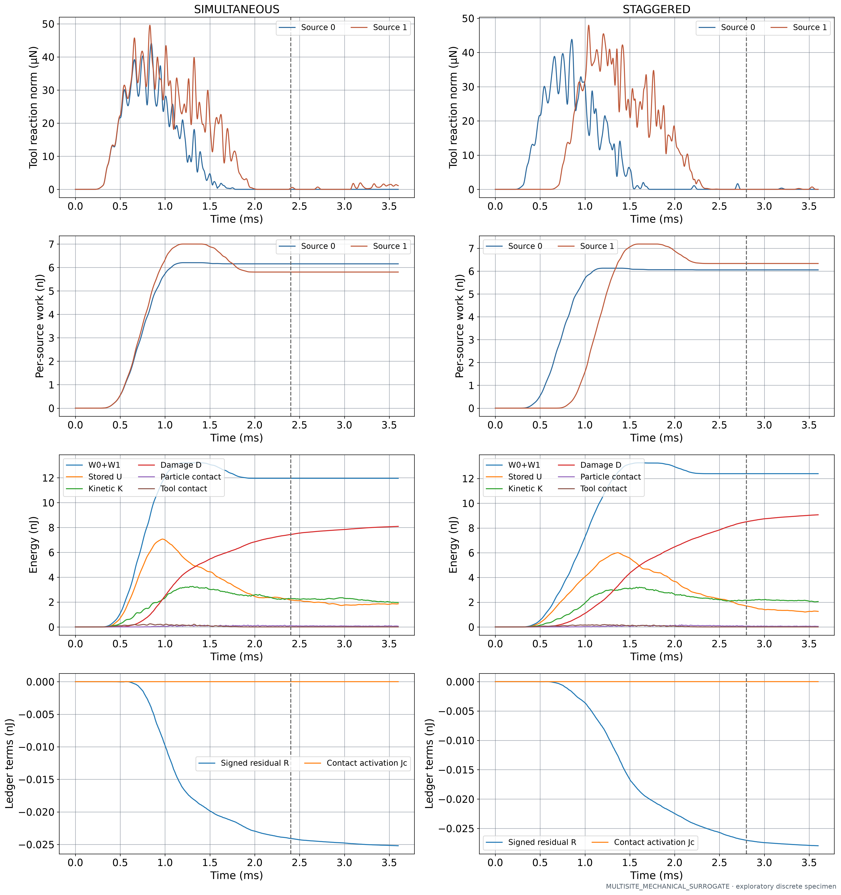
Actual independent native source reactions and independently integrated work. W0+W1 = ΔU + ΔK + D + ΔUc − Jc + ΔUi + R; no damping. R is numerical accounting error, not dissipation. Dashed lines mark each protocol’s scheduled return; recontact remains possible.